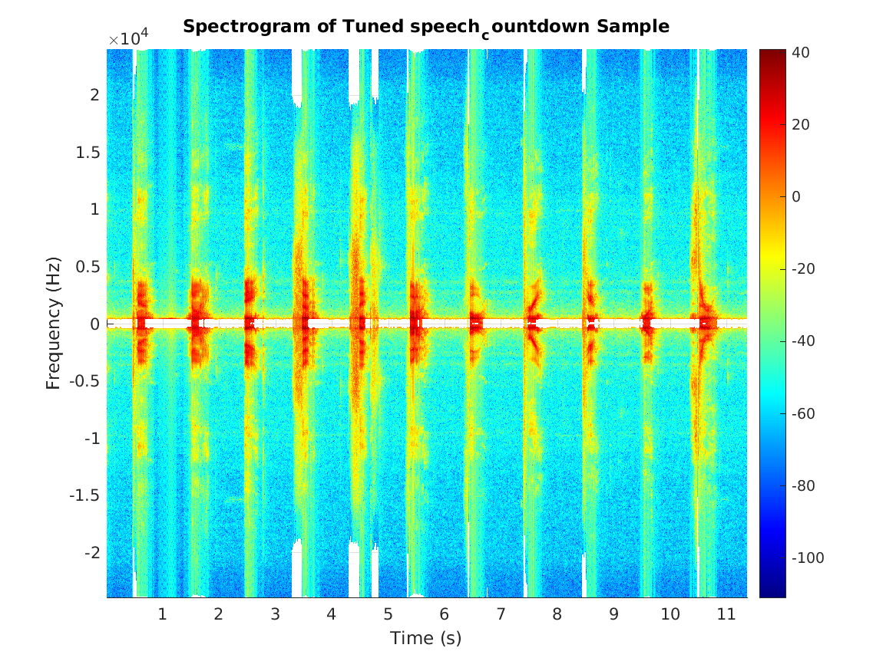
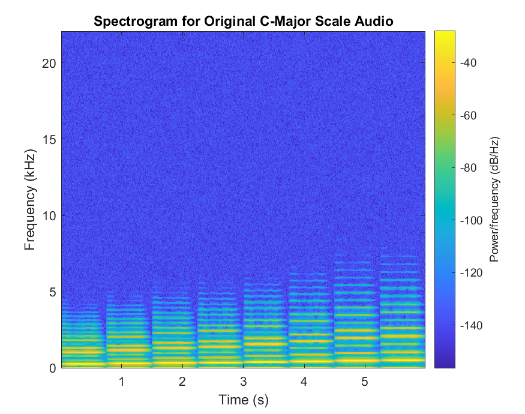

Autotuner
Experiments in autotuning arbitrary sounds in Matlab.
Project maintained by Hosted on GitHub Pages — Theme by mattgraham
Autotuning Signals in Matlab
A project by Lizzy Presland, Bo Simmons, and Jayden Fullerton.
Summary
In this project, we work to create a utility which processes an audio file (for example, human speech or synthesized musical notes) and and produces an audio which has its pitch corrected to a desired frequency in the Western chromatic scale. We achieve this through the implementation of a basic, peak-based, pitch-shifting phase vocoder. Tuning is achieve by using a Short-Time Fourier-Transform to allow us to isolate fundamental frequencies, calculate and perform shift, then use an Inverse Short-Time Fourier-Transform to reassemble the now tuned signal. Results including spectograms and audio files for two such attempted implementations are included, and future work and areas for improvement are outlined.
Background
In the music industry, the process of pitch correction, informally known as autotuning, is a common practice. Its musical merits are in constant dispute in the music industry, but its prevalence and popularity in many genres of popular music has secured the technique’s importance in music production and in digital signal processing (DSP).
Traditionally, in music, artists will have to continually take attempts of a song until they get a satisfactory attempt where the notes the artist produces/sings line up with the intended notes from the song composition. However, artists producing vocals that are up to standard is very difficult, and autotuning allows less talented artists to produce songs that appear to be from a very talented artist. There is controversy over this, as some thinks it takes away from the talent of being an artist, as less talented artists can sound better than they actually are. Others argue in favor of autotune, saying it allows artists to put more emotion into their songs than they could otherwise because they need less attempts.
The implementation of an autotuner is closely related to the more general DSP technique known as a phase vocoder. A phase vocoder is a common technique that is used to process audio signals. This is done using a Short-Term Fourier Transform, which will be discussed in more detail later. This technique (or variations of it) are used in a lot of autotuning software.
Techniques
To analyze the frequency content of the audio signal, we utilized short-time Fourier transforms (STFTs) of the input signal. This technique decomposes the audio signal into a series of Fourier transforms, which allows the time domain signal to be represented as a series of frequency domain spectra. With this technique, we can analyze the frequency components of a signal to determine which frequency or frequencies are represented in a small time window of the signal, and work to make changes to that frequency spectrum to achieve our desired results.
This approach, described by Laroche and Dolson (1999), can be outlined as follows:
- Take a Short-Time Fourier-Transform for the input signal.
- Detect peaks within the STFT.
- Calculate frequency shift for each peak.
- Shift the frequency of each peak.
- Inverse the STFT in order to produce a tuned signal.
These steps will be elaborated on further through the remainder of this section.
Our group made two attempts at implementing this approach. The first worked at effectively tuning individual pitches, but was particularly choppy and at times failed to identify the correct frequency shift. For this reason, we took a second approach. The results section contains data from both, but the remainder of the techniques section focuses on the second of our attempts at implementation.
1. Short-Time Fourier-Transform
A short-time Fourier-transform breaks a signal into windows of a known time duration, and applies an FFT individually for each window.
This is critical because it doesn’t just tell us which frequencies are present in the signal as a whole, but during which manageably sized tme durations those frequencies are present. This is what enables us to tune different points in the signal to different pitches, and also to reconstruct the signal later after shifting pitches.
Our final approach fits Laroche and Dolson’s description of a basic, peak-based, pitch-shifting phase covoder. Like our solution, their basic approach utilizes a fixed, uniform window size (the segments on which the ffts are made) and allows a fixed 50% overlap. This is a more simplistic and naive approach, but has half the computational complexity of using 75% overlap (Laroche & Dolson, 1999).
2. Peak Detection
When implementing pitch correction, our first approach was simplistic. We elected to locate the frequency with the largest magnitude in each column of the STFT, which we assume is the fundamental frequency for that transform. This was true for both approaches.
3 and 4. Calculating and Implementing Frequency Shift for each Window
Once a fundamental frequency had been identified, we then performed a raw offset of the column containing that transform so that the fundamental frequency of each STFT column resided in the frequency-domain bin which was closest to the target frequency.
One of the critical differences between our first and second implementations was that our second was able to use multiple target frequencies. The method responsible (detailed below) accepted a vector of target frequencies as a parameter and matched each window’s fundamental frequency to its closest match allowing us to tune to an input scale, or other set of frequencies, rather than a single pitch.
5. Inverse Short-Time Fourier-Transform
After performing modifications to the signal’s STFT, it is necessary to convert the frequency domain representation of the modified signal to the time domain. To accomplish this, we take the inverse of the STFT, which inverts the process used to produce the STFT. First, the inverse FFT of each frequency domain window is calculated, and then the time domain signal values are rescaled using the inverse of the same mapping used to scale the input signal’s window. If a Hamming window is used, the reciprocal of the scale value for each element is used to rescale each element in the inverted FFT. Lastly, if the overlap parameter is non-zero, the resulting reconverted signal is cumulatively at the offset specified by the overlap parameter.
Our second and final approach to autotuning utilizes an overlap-add approach to istft which utilized the Overlap-add method (pictured in Figure 1). This involves essentially aligning the overlapping portions and adding them together, as described by Radiner (1975). The ISTFT implementation we used was one we found online (here ).
|
|
|---|
|
Figure 1: Overlap-Add Algorithm Visualization (source: https://upload.wikimedia.org/wikipedia/commons/1/10/Gain_oa_method.png) |

Design
To isolate the processing and transformation of a signal, and the parameters
required to perform these tasks, we created a class AutoTuner to provide
object members and functions which perform the steps necessary to perform
pitch correction. Such a structure allows for multiple pitch correction
approaches to be written and documented. We explicitly decided that the
client utilizing the class would be responsible for calling the class
functions which perform pitch correction and convert the frequency domain
STFT back into a time domain signal. Separating each of these steps gives
the user greater control over inspecting and graphing the signal at various
steps in the process.
Furthermore, we also decided that the AutoTuner class would not have
any graphing utilities embedded into the
Our final design relied primarily on the following methods:
- tuneSampled() to perform the stft using Matlab’s spectrogram function, pass the output to correctPitchSpectrum(), then perform an istft on the result.
- correctPitchSpectrum() to iteratively perform peak detection and pitch correction for each window of the stft.
Code Block 1: Function Definition for tuneSampled():
function [ts Fs] = tuneSampled(ogSignal, samplingRate, windowsize, nfft, waveName, targetPitches)
Fs = samplingRate;
% actual stft using spectrogram part
[s f t] = spectrogram(ogSignal, hanning(windowsize), windowsize/2, nfft, samplingRate);
%% ... file stuff for outputting spectrogram goes here
% actual pitch correction and istft
sc = correctPitchSpectrum(s, f, targetPitches);
sc = conj(sc); % Essential
ts = depricatedistft(sc, nfft, windowsize, windowsize/2);
%% ... file output stuff ...
end
Note that, while a separate version exists for handling two channel audio by separately tuning each channel, simply adding the channels together and calling tuneSampled is more efficient.
Code Block 2: Function Definition for correctPitchSpectrum():
function correctedSpectrum = correctPitchSpectrum(s, f, targetPitches)
% ...
% SETUP CODE
% ...
% main loop HERE IS WHERE STEPS 2, 3, and 4 FROM OUT PROCESS HAPPEN ...
for bucket = 1:numBuckets % ... ITERATIVELY FOR EACH BUCKET
% 2) Identify fundamental frequency for each bucket using frequency that corresponds to max amplitude
selectedPitch = f(find((y(:,bucket) == max(y(:,bucket))),bucket,'first'));
% 3) individual pitch correction by finding closest value in target table
[d, idx] = min(abs(targetPitches - selectedPitch));
correctedpitch = targetPitches(idx);
% 4) perform pitch shift
shiftFactor = correctedpitch/selectedPitch;
for idx = 1:length(s(:,1))
shiftval = round(idx/shiftFactor);
if shiftval <= length(s(:,1))
if shiftval <= 0 % No negative out of bounds indexing
shiftval = 1;
end
correctedSpectrum(idx,bucket) = s(shiftval,bucket);
end end end end
Results
Approach 1: Raw Frequency Domain Offsets
We ran tests on a few sound examples, showing the altered spectrograms and resulting sounds.
Here’s a simple test which uses an E♭ in the 5th octave as input.
|
Original Signal |
Output Signal |
|---|---|
|
|
|


We then tested the software on complex and overtone-rich signals.
|
Spoken countdown |
|
Spectrogram of speech example after pitch correction is applied. |
|
Audio files of a) original signal, b) pitch correction reference tone, and c) pitch corrected sound. |
||
|
Synthesized C major scale |
|
|
|
C Major scale audio results |
Audio files of a) original signal, b) pitch correction reference tone, and c) pitch corrected sound. |
|
|
Buddhist Vajrayana chant |
|
|
|
Buddhist Vajrayana chant audio |
Audio files of a) original signal, b) pitch correction reference tone, and c) pitch corrected sound. |
|
 Original spectrogram of spoken numerical countdown.
Original spectrogram of spoken numerical countdown. Original spectrogram of C major scale.
Original spectrogram of C major scale. Spectrogram of C major scale after pitch correction is applied.
Spectrogram of C major scale after pitch correction is applied. Original spectrogram of Buddhist vajrayana chant.
Original spectrogram of Buddhist vajrayana chant. Spectrogram of chant after pitch correction is applied.
Spectrogram of chant after pitch correction is applied.Approach 2: Mult-Pitch Target Autotuning, Peak-Based, Phase-Vocoder
These are the results for the second approach, using 50% window overlap, fixed window length, and a non-object-oriented approach. We were able to improve our turning, as well as choppiness and overall fidelity to the original audio’s sound characteristics.
For the purposes of this approach, Matlab’s spectrogram function was used rather than the stft function, partially for the purpose of consolidating code where spectrogram’s needed to be produced anyways. The bulk of the process was performed by a single method, correctPitchSpectrum. That’s method’s function definition is shown below in Code Block 1.
Our first step was validating this second approach. To this end, we generated an audio file with constantly increasing frequency (available below), and attempted to tune it to the C-Major scale. This proved effective, and the tuning shows in the spectrogram as horizontal steps for each change in pitch.
|
Original Signal |
Output Signal |
|---|---|
|
|
|


Next, and as a point of comparison between the two approaches, consider the C-Major scale .wav file used for testing purposes above. The output was choppy, an not entirely on pitch. Note that our expectation is no significant pitch change, with a secondary goal of maintaining sound characteristics.
Note that while the displayed results were achieved by first adding the two channels of audio sampled from the original .wav file, the same result was achieved by separately tuning each channel and recombining at the end. This is to be expected for a scale.
|
Original Signal |
Output Signal |
|---|---|
|
 |
|

There are two key observations to make:
- First, the tones are smoother and appear to be the correct pitch.
- Second, the duration of the output audio is slightly shorter.
The first observation is reflective of the fact that this second approach works extremely well for single tone audio, while the second is reflective of the fact that, during the peak identification process, the beginning and end were ever so slightly truncated.
While the C-Major scale provides an example of the advantages of this second approach over our first, now consider the Vajrayana chant.
|
Original Signal |
Output Signal |
|---|---|
|
|
|


User Guide
Approach 1: Single Tone
Following these steps will allow anyone to run the software and reproduce our results or experiment with user-supplied sound samples.
The relevant structure of our project is as follows:
.
├── matlab/
│ ├── AutoTuner.m
│ ├── driver.m
│ ├── pitchTable.m
│ ├── spectrogramPlot.m
│ ├── test_audio/
│ ├── test_images/
│ └── utils
│ └── AnalogSignal.m
└── sounds/
Each of the Matlab files listed here performs specific functionality.
-
AutoTuner.m: A class which rovides the core implementation of our pitch correction approaches and necessary utilities. It contains an object constructor which stores the input arguments and other necessary parameters for creating the STFT and its inverse. There are other important methods in this file which perform pitch correction and create the STFT and its inverse. -
driver.m: the driver for the end-to-end processing of an audio file. It contains a utility method calledperformSinglePitchAutoTune, which allows the user to decrease the repetitiveness of the various steps needed to produce STFT modifications, spectrograms, and audio files for the resulting pitch correction. This file also contains calls to produce pitch correction results for different inputs. -
pitchTable.m: Contains a matrix of the frequencies of the Western chromatic scale from octave 0 through octave 8. -
spectrogramPlot.m: Creates plots of the STFT and the modified STFT to show the original and pitch-corrected value of the signal in the frequency domain. -
utils/AnalogSignal.m: we wished to produce an example of the target frequency so that the target frequency and processed input can be compared with each other by the listener. To do this, we utilize the AnalogSignal class provided by Prof. Stiber.
To provide new sound samples, add audio files to the sounds/ directory.
Then, navigate to the matlab/ directory and open up the driver.m file.
Around line 7, there are a series of calls to the performSinglePitchAutoTune
method. You may add, remove, or reorder these calls as you see fit, and
you may add a call to process a sound file you have provided.
If, for example, you wanted to process an audio file called example.wav,
you would move it to the sounds/ directory, and in driver.m, add a
single call:
performSinglePitchAutoTune('example', 'wav', pitches(5, 10), 'test_images/example');
Then, from the Matlab IDE or from the CLI application, you can invoke
the pitch correction process by simply typing driver to run the script file.
The software produces spectrogram plots of the original signal’s STFT and the modified STFT after pitch correction has been applied. The software also produces the following audio files:
- A copy of the target frequency tone, saved as
test_audio/tone_<desiredPitch>hz.wav - A copy of the pitch correction result of the original signal, saved as
test_audio/<audioFilename>_tuned_<desiredPitch>.wav - A concatenated version of the input, desired tone, and resulting signal after pitch correction, with half a second of silence between each signal
Approach 2: Multi-Pitch Targeting
Following these steps will allow anyone to run the approach 2 component of our software in order to tune audio input to any specified set of target frequencies. Calling driver2.m specifically will allow users to reproduce our results or experiment with user-supplied sound samples.
The relevant structure of our project is as follows:
.
├── matlab/
│ ├── driver2.m (will run tests whose results appear in report)
│ ├── tuneSampled.m (first part of core logic)
│ ├── correctPitchSpectrum.m (second part of core logic)
│ ├── tuneSampledTwoChannelsSeparately.m (unnecessary, add channels and use tuneSampled)
│ ├── pitchTable.m (Contains half-step chromatic scale to target)
│ ├── cmajorPitchTable.m (Contains C-Major scale to target)
│ ├── test_audio/ (Destination of output audio files)
│ ├── test_images/ (Destination of output spectrograms)
│ └── utils
│ └── depricatedistft.m (Not ours, essential to produce audio output)
└── sounds/
Each of the Matlab files listed here performs specific functionality.
- driver2.m: The driver with code sections for running each of the tests with shown results. Instructions for adding custom audio can be found below.
- tuneSampled.m: Responsible for executing both the initial Short-Term Fourier-Transform before passing the spectrum to pitch correction, and also for executing the Inverse Fast-Time Fourier-Transform on the result from pitch correction. This corresponds to steps 1 and 5 from the process outlined in the ‘Techniques’ section. Additionally, tuneSampled will play tune audio when it finishes, save a copy of the tuned audio, and save pre and post-tuning spectrograms.
- correctPitchSpectrum.m: This contains the rest of the core logic, corresponding to steps 2, 3, and 4 of the process outlined in ‘Techniques.’
- pitchTable.m: Contains a matrix of the frequencies of the Western chromatic scale from octave 0 through octave 8. This is passed as the set of target frequencies in many of our test cases.
- cmajorPitchTable.m: Analagous to pitchTable.m, but containing only the pitches found in the C-Major scale.
- depricatedistft.m: This was, as stated above in the ‘Techniques’ section, downloaded and not our own code. It uses the Overlap-Add algorithm to inverse the STFT and produce the tuned digital signal, which in turn can be turned into the audio output.
The addition of audio files is the same as for the previous single tone tuning approach.
Unlike the previous approach, you will need to navigate to, and edit, driver2.m.
Insert, at line 14, one of the following two options (replacing anything in and including angle braces with the appropriate values you want as specified):
|
Case A: Single Channel Audio File |
|---|
|
[ogSignal, Fso] = audioread(audiofilename); |
|
[ts Fs] = tuneSampled(ogSignal, Fso, windowsize, nfft, wavename, targetPitchesVector); |
|
Case B: Two Channel Audio File |
|---|
|
[ogSignal, Fso] = audioread(audiofilename); |
|
ogSignal = ogSignal(:,1) + ogSignal(:,2); |
|
[ts Fs] = tuneSampled(ogSignal, Fso, windowsize, nfft, wavename, targetPitchesVector); |
Alternatively, if you’re looking to prove to yourself that tuning Two Channel audio separately doesn’t make a difference, you could consider option C:
|
Case C: Two Channel Audio File, Tuning Channels Separately |
|---|
|
[ogSignal, Fso] = audioread(audiofilename); |
|
tuneSampledTwoChannelsSeparately(ogSignal, Fso, windowsize, nfft, wavename, targetPitchesVector); |
The inputs should be assigned values as follows:
-
audiofilename- A string which is the name, including file extension, of the audio file you wish to tune. -
windowsize- An integer representing the intended window size for the Short-Time Fourier-Transform. (Recommendation: 1000). -
nfft- An integer denoting the nfft sampling points for calculating the discrete fourier transforms. (Recommendation: 1024). -
wavename- A string meant to uniquely identify this wave and its output. Must conform to your systems file name character requirements. -
targetPitchVector- A vector of frequencies which represents the set of pitches which you hope to tune your audio to. (Recomendation: Start with the pitch table).
Once those additions have been made for each file you wish to test, save driver2.m.
Once that’s complete, you can run driver2.m by typing driver2 in the Matlab IDE or using the CLI.
Each of those cases above will produce the following outputs:
- A Spectrogram of the Original Signal - This can be found in
autotuner/matlab/test_images/. - A Spectrogram of the Tuned Signal - This can be found in
autotuner/matlab/test_images/. - A .wav Audio File of the Tuned Result - This will play audibly, and also be saved to
autotuner/matlab/test_audio/.
How does your software work (from the user’s point of view)? Should include things like screen shots. Illustrate the sytem in operation with real execution examples. A screencast video would be appropriate here (but is not required). If you want to do this, please contact me ahead of time to deliver the video separately, since I assume that it will be too big to submit via Canvas.
Alternative Approaches
There are several types of “alternative approaches” which, essentially, fall into the category of being more sophisticated versions of the same approach we’ve taken. For this reason, those alternatives can be found in the “Future Work” section below. This section enumerates completely separate approaches to auto-tuning.
-
Another approach is the Phase-Vocoder Pitch-Shiting technique, which is not peak-based, described by Laroche and Dolson.
-
In some ways a completely different direction, we could have attempted to build our auto-tuner around a real-time pitch detection algorithm.
An approach we could have taken that was rather similar could have been using the Pitch-Synchronous Overlap-Add tool instead of pitch vocoding. The main advantage to using PSOLA over pitch vocoding is PSOLA is designed to modify the pitch of the signal without modifying the other characteristics of the signal. This is closely related to the STFT that is used in pitch vocoding. A main advantage of PSOLA is effeciency, as pitch vocoding is relatively ineffecient.
Limitations
-
While we managed to overcome our project’s initial limitation of only being able to tune to a single target pitch, we are still using an approach which is optimized for audio that plays a single tone at a time. Harmonizing is completely lost with our approach at this time.
-
Our approach does not work well with speech, or any sounds with nuanced characteristics, as it is not only vulnerable to noise, but produces a “choppy” output due to the smaller overlap we used to avoid ballooning computational complexity.
-
We are only capable of auto-tuning recorded audio, and only if the user already has the audio file on-hand to place into the appropriate directory. We can neither handle the recording of new audio, nor the tuning of real-time audio. Both are significant to most actual auto-tuning applications.
Problems
Language- and Domain-Specific Issues
-
For this project, we chose Matlab to implement our pitch correction tools. There are significant benefits to this: easy manipulation of multidimensional arrays, straightforward handling of complex values, and convenient built-in methods for Fourier transform operations, to name a few.
-
However, we experienced inconveniences with Matlab in this project; the wall-clock computation time for producing pitch corrections varied between dozens of seconds and whole minutes, depending on the length of the input audio file.
-
It was also difficult to prototype specific functionality, because the process of loading an audio file, calculating its STFT, performing pitch correction, and calculating the inverse STFT is a very linear process. The methods we wrote were complex enough, with many required parameters, that trying to call them from the Matlab CLI could be confusing.
-
These problems may have been easily mitigated if we had begun development of the pitch correction implementation with a clearer design for the application in mind, and decoupled some of the steps from each other in more intelligent ways.
Implementation Issues
Our approaches have numerous potential issues, the most significant of which we list here.
- By taking the single largest magnitude in each frequency-domain bin, this implementation is susceptible to signal noise. If a noisy component of the signal, or a harmonic overtone, has a larger magnitude than the fundamental frequency of the speaker or sound source, then the pitch adjustment will be adjusted to pitch correct the incorrect signal component.
- In complex sound structures which have natural overtones, the overtones which have lower magnitudes in the frequency domain are not properly scaled when the fundamental frequency is shifted to the target frequency bin. This behavior corrupts the sound and introduces pitch beating and distortion to the pitch corrected version of the signal.
- It is quite possible that this implementation does not perform necessary pre- or post-processing of the frequency spectra after pitch correction is applied. After the frequency-domain STFT is shifted to attempt pitch correction, the inverse STFT operation produces a complex-valued signal, which is to be expected if the STFT doesn’t correspond to a real-valued input signal. However, a complex-valued signal which must be represented with real values will certainly lose fidelity, and it’s possible that an effective pitch correction process would minimize or eliminate any complex-valued inverse transforms.
Future Work
-
As noted in the problems section above, there are many suboptimal strategies currently being used in regards to the autotuning. Before attempting an expansion of the project, many (if not all) of these issues will need to be resolved. The most important change out of those listed in the problems section would be choosing frequency-domain bins that better reflect the part of the signal that needs to be modified (i.e. analyzing the bin rather than picking the maximum from the bin).
-
We could computer the Harmonic Product Spectrum in order to highlight peaks for fundamenta frequencies. This would not work in every case however, and we’d want it to be an optional approach with some sort of flag governing that logic.
-
To address the problem of noise susceptibility, a better approach would perform cluster analysis of high-valued magnitudes in a single transform bin in the STFT; such an analysis would be more likely to find patterns of significance in the distribution of frequencies to locate the average fundamental frequency with greater accuracy. It would also be advisable to examine the most significant frequencies over a range of individual transforms in the STFT.
-
When a sound contains harmonics or other frequency components, they should almost certainly be scaled so that a pitch correction for a located fundamental frequency has its overtones and other frequency components scaled to a frequency which allows the proportions of the pitch corrected frequency bins to maintain the same relative proportions as the unaltered spectra.
-
The software could be ported/implemented in another language such as Python. This could allow potential integration with a user interface with a simple file input/output using either compressed (mp3) or uncompressed (wav/aiff) audio files.
References
Backstrom, Tom. Pitch-Synchronous Overlap-Add. 9 Sept. 2019, wiki.aalto.fi/pages/viewpage.action?pageId=155477136.
Diaz, Joe. “The Fate of Auto-Tune.” Music and Technology (2009). Online PDF.
Laroche, J., and M. Dolson. “New Phase-Vocoder Techniques for Pitch-Shifting, Harmonizing and Other Exotic Effects.” Proceedings of the 1999 IEEE Workshop on Applications of Signal Processing to Audio and Acoustics. 1999, pp. 91–94., doi:10.1109/aspaa.1999.810857. Online PDF
Rabiner, Lawrence Richard., and Bernard Gold. Theory and Application of Digital Signal Processing. pp. 63-65. Prentice-Hall, 1975.